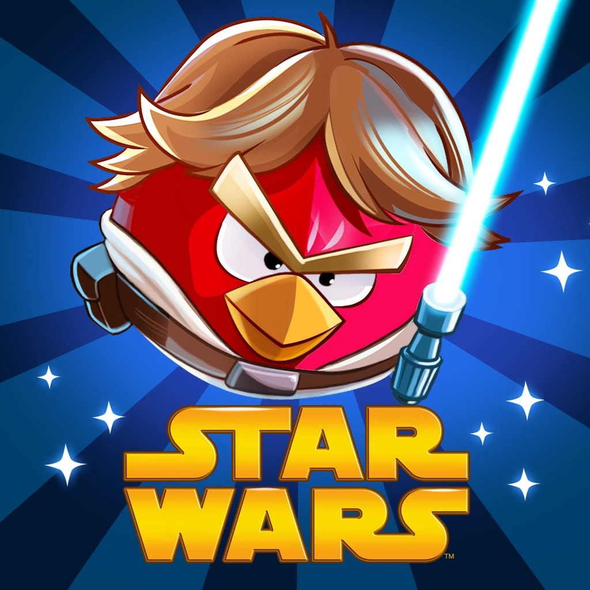

Bem-vindo à fase dos picos de neve!
Angry Birds Star Wars é um jogo de quebra-cabeça e o décimo título da série Angry Birds, lançado em 2012. Desenvolvido pela Rovio em parceria com a LucasArts, o jogo é um crossover entre a série de pássaros e a trilogia original de Star Wars.
Em 2019, a Rovio retirou a maior parte de seus jogos clássicos, incluindo Angry Birds Star Wars, das lojas de aplicativos como a Google Play e a App Store. Em fevereiro de 2020, os servidores do jogo foram desativados. A decisão foi tomada pela Rovio para focar em títulos mais novos, já que os jogos mais antigos usavam licenças de terceiros e se tornaram difíceis de manter. Apesar disso, o jogo ainda pode ser jogado se baixado por outros meios.